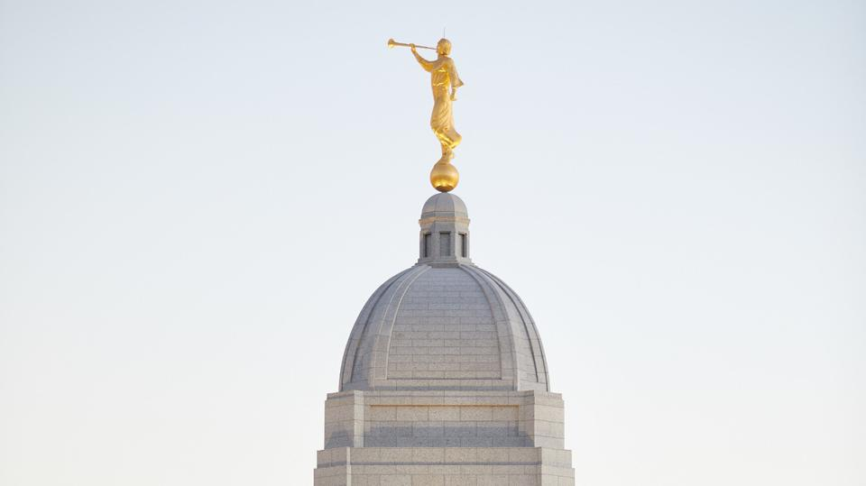
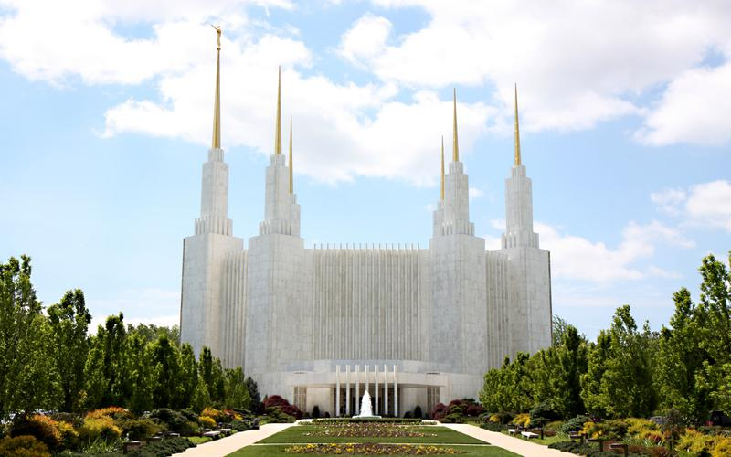

Temple Inn & Suites

Make Reservation
Washington D.C. Weather
°F
Humidity: %
Forecast

Plans to construct the temple were announced November 15, 1968, Church leaders broke ground December 7, 1968, and Spencer W. Kimball, president of The Church of Jesus Christ of Latter-day Saints from 1973 to 1985, dedicated the Washington D.C. Temple November 19, 1974. The temple serves Latter-day Saints in Washington, D.C., Virginia, West Virginia and Maryland.